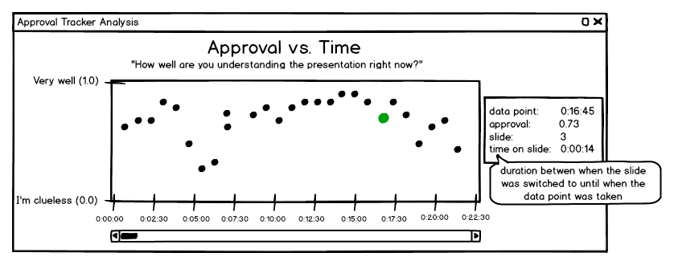

The Approval Tracker Analysis tool allows the presenter and others to review the approval of the presentation. The Approval Tracker records the average approval of the presentation over time.
The Analysis tool shows the datapoints recorded. The displacement from the x-axis represents the average student approval, and the displacement from the y-axis represents the time since the start of the presentation.
To the right of the graph, a stationary panel is displayed which gives information about the currently selected datapoint. When the presenter selects a datapoint, this panel displays information on: the exact time (to the second) of when the datapoint was taken since the presentation began, the value between zero (left/bottom value) and one (right/top value) of the average approval at this time, the slide number of the slide that was active when this datapoint was taken, and the duration betwen when the active slide was switched to and when this data point was recorded.
Figure 1 shows the Approval Tracker Analysis.

Figure 1: The Approval Tracker Analysis.